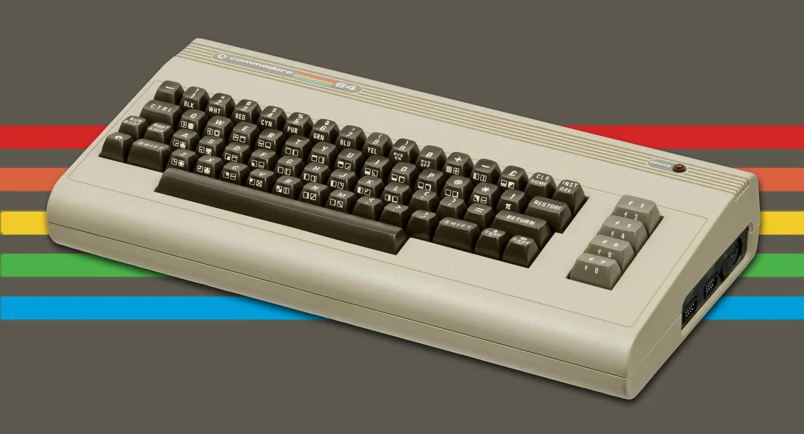

“Commodore welcomes more first-time computer users than any other company in the world. -Max Toy Pres. of Commodore”
"Personal computers have become the most empowering tool we've ever created." -Bill Gates
The idea of having a computer for the family really took off in January of 1982. Again at CES Commodore showed off their newest computer. For $595 (more than half of what the other computers mentioned cost) Commodore released the Commodore 64. With its 64 kilobytes of ram, amazing sound and graphics, along with a ton of processing power the 64 and a super intuitive coding language argued to be the easiest ever to be programmed.
By 1983 Commodore had already sold 5 million units and by 1983 would reach a total of 6 million units sold. The Commodore 64 took both businesses and homes by storm offering amazing software along with a fantastic line of video games. Commodore president Max Toy said, “Commodore welcomes more first-time computer users than any other company in the world.” Commodore by itself put computers in the homes of many and led the way for modern computing and video games. The Commodore 64 changed history, changed businesses and set the entire world on a whole new track.